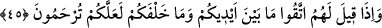

“Onlar için, bunun gibi binecekleri başka şeyler de yarattık.” Bu ise vuslata eren
kâmil meşâyihın himmet kanadıdır. “Dilesek onları suda boğarız.” Yâni şeriat gemisini
kırıp parçalayarak avâmı dünya denizinde, havâssı hakikat denizinde boğarız. Tıpkı
temennî ehlinden kim şerîat gemisi olmaksızın hakikat denizine açılırsa ya da şerîat
gemisini parçalarlarsa, suda boğulur ve sonra da cehennem ateşine sokulurlar.
“O zaman ne onların imdadına koşan olur, ne de onlar kurtarılırlar. Ancak bizim
tarafımızdan bir rahmet” ki onlar meşâyıhtır. Çünkü onlar Hak Teâlâ’nın rahmetinin
sûretleridir “ve belli bir zamana kadar” yâni ezeli inâyet kendilerine yetişinceye kadar
“dünyadan faydalandırmamız müstesnâdır.”
45. Onlara “Yapmakta olduğunuz ve yapıp arkada bıraktığınız işlerde Allah’tan
korkun; umulur ki size merhamet olunur.” denildiğinde (aldırmazlar).
“Onlara” yani Mekke kâfirlerine uyarı yoluyla “yapmakta olduğunuz” yani
peygamberlerini yalanlayan geçmiş ümmetlere verilen cezâlardan ve inanmadığınız
takdirde benzerinin sizin de başınıza gelmesinden korkun “ve yapıp arkada bıraktığınız
işlerde” helâk olduktan sonra âhirette sizin için hazırlanmış olan azap konusunda
“Allah’tan korkun.” Geçmişte yaşanan vâkıalar onlardan önce olması îtibariyle sanki
önlerindeymiş gibi kabul edilmiştir. Âhiret halleri onların helâkinden sonra olacağı için
arkalarında kabul edilmiştir.
Ya da önünüzde olan âhiret işinden korkun ve âhiret için çalışın. Ardınızda olan
dünyadan sakının ve ona aldanmayın demektir. Burada daha başka yorumlar da vardır.
Ancak bizim önce söylediğimiz daha uygundur. Çünkü Allah Teâlâ Kur’an’da kâfirleri
iki şeyle korkutmuştur. Bunlardan birincisi geçmiş ümmetlerin cezâlandırılmaları,
ikincisi ise âhiret azabıdır.
“Umulur ki size merhamet olunur.” Yâni size rahmet olunacağını umarak Allah’tan
korkun veya rahmet olunmak için Allah’tan korkun ki bu durumdan kurtulasınız. Çünkü
siz kurtuluşun Allah’ın rahmetine bağlı olduğunu biliyorsunuz “denildiğinde
(aldırmazlar).” Âdet ve alışkanlık hâline getirdikleri üzere öğütten yüz çevirirler, daha
çok kibir ve inâd ederler. Nitekim gelen âyet buna delâlet etmektedir.
Sa’dî, Bostân’da der ki:
Kafası kuruntu içinde olan kimsenin,
Gerçeği kabul edeceğini aklından çıkar
Öylesi kimse öğrenmekten bıkar, öğüt dinlemekten arlanır.
Yağmur yağmakla taştan şakayık bitmez.